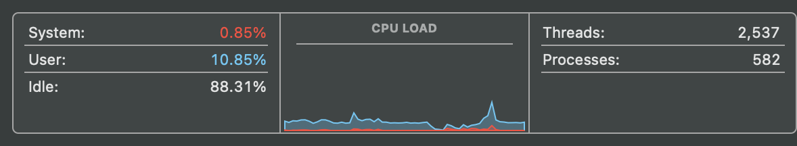
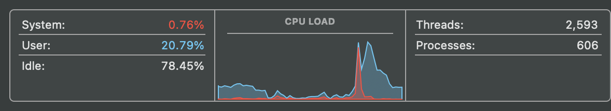

In our example code from Chapter 6 we implemented a number of functions to run a simulation study on the comparison of stepwise and lasso variable selection methods. It all ran, but was a bit slow… and was a bit of a mess. Now we will talk about speeding it up and cleaning it up.
# load packageslibrary(tidyverse)library(glmnet)library(caret)library(tictoc)# define function to simulate response and covariatesmake_sim_data<-function(n=100, p=20, q=10, b=0.1, sd_y=1, sd_x=1){# generate covariatesX=sapply(1:p, function(i)rnorm(n, mean =0, sd =sd_x))# give column namescolnames(X)=paste0("x", 1:p)# generate beta vector (q significant, non-zero parameters and p-q zeros)beta=c(rep(b, q), rep(0, p-q))# calculate responsey=(X%*%beta)[,1]+rnorm(n, mean =0, sd =sd_y)# save as dataframdata_sim=data.frame(y,X)return(data_sim)}# function for choosing with stepwise and fitting a regression# -> inputs dataframe and returns selected modelstep_var_mod<-function(df){# run stepwise procedure from full modelstep_selected<-step(lm(y~. , data =df), trace =FALSE)return(step_selected)}# function for choosing with lasso and fitting regression# -> inputs dataframe and returns selected modellasso_var_mod<-function(df){# tune shrinkage parameter lambdacv.out<-cv.glmnet(x =as.matrix(x =df[ , -which(names(df)=="y")]), y =df$y, alpha =1, type.measure ="deviance")# run lasso selection on model using tuned lambdalasso_mod<-glmnet(x =as.matrix(x =df[ , -which(names(df)=="y")]), y =df$y, alpha =1, lambda =cv.out$lambda.1se)# save names of non-shrunk X variableslasso_vars<-names(lasso_mod$beta[,1])[which(lasso_mod$beta[,1]!=0)]# HACK (not elegant solution): lasso had a tendency to select zero variables which breaks the timing study below# -> so if no variables are selected, just take the first variableif(length(lasso_vars)==0)lasso_vars<-names(lasso_mod$beta[,1])[1]# fit model based on lasso selected variables (plus intercept)lasso_selected<-lm(formula(paste0("y ~ 1 + ", paste(lasso_vars, collapse =" + "))), data =df)return(lasso_selected)}# function for finding number of variables included# -> inputs a model and returns an integerselect_var_count<-function(lin_mod){# count the number of variables in the model (excluding intercept)length(coef(lin_mod))-1}# function for finding 10-fold cross validated RMSE (our accuracy measure)select_cv_rmse<-function(lin_mod){# run 10-fold CV on the model# -> by default trainControl() uses bootstrap validation, so need to switch it# -> always want to use intercept, else it will try to tune the intercept (decide to include or not include it), the stepwise always gives an intercept so need fair comparisoncv_result<-train(formula(lin_mod), data =lin_mod$model, method ="lm", trControl =trainControl(method ="cv", number =10), tuneGrid =data.frame(intercept =TRUE))# return RMSEreturn(cv_result$results$RMSE)}# define function to run a single trial# -> inputs each subject (df), applies the treatment (selection_alg which is a function), and collects the resultsrun_trial<-function(selection_alg, df){# run variable selection model# -> we can use a tmp prefix for the model to represent a temporary object (model) (it is temporary because it is in a temporary environment when the function is called)# record start and end timestart_time=Sys.time()tmp_mod=selection_alg(df)end_time=Sys.time()# collect measurements for number of variables and predictive accuracy# -> will be storing results as dataframe, so want to return a mini dataframe here# -> want to name elements when returning more complex data structuresreturn(data.frame(nvars =select_var_count(tmp_mod), rmse =select_cv_rmse(tmp_mod), time =difftime(end_time, start_time, units ="sec")))}# define function to run a study on number of variables selectedvars_selected<-function(n_sims=10, n=100, p=10, q=5, var_select_fun=step_var_mod){# initialize results vectorq_hat=rep(NA, n_sims)for(iin1:n_sims){# generate datadata_sim=make_sim_data(n =n, p =p, q =q)# run variable selection and return jus the number of variables selectedq_hat[i]=run_trial(var_select_fun, data_sim)$nvars}return(q_hat)}
Note that in practice, we should reorganize our final quarto doc. WIth all of the helper functions in the same document as our actual computational experiment, they kinda get in the way and make it hard to tell what the actual computational experiment is that we are doing. So, these helper functions should be placed in a separate R script and brought in via source(). This way it behaves like loading a library (a group of functions) that has functions are ready to use.
Running any simulation study takes time, and perhaps 30 sec is a reasonable amount of time for when we are first starting. But if we want to scale up studies to more parameter combinations, larger datasets, etc., we need ways to speed up the processing time.
7.2.1 Running code in parallel - “Base R”
One initial way to increase the efficiency of your code is with parallel processing, which essentially allows your machine to use more resources (cores) to evaluate multiple things at the same time. Using base R apply() family of functions, there is a multicore version of lapply(), but not for mapply(). So here is the previous implementation of the timing study from Section 6.3.2, except with lapply(). Note that we will not be worried about formatting the final results, just the time it takes to run the main function.
# mapply() -> run variable selection studyvar_counts<-mapply(vars_selected, n =c(100, 200), p =c(10, 15), q =c(5, 10), MoreArgs =list(n_sim =3 , var_select_fun =step_var_mod))var_counts
[,1] [,2]
[1,] 4 6
[2,] 7 9
[3,] 4 7
# define possible parameter combinationsparams<-expand.grid(n =c(100, 1000, 5000), p =c(20, 30), q =c(5, 10))# lapply() -> run variable selection studytic()var_counts<-lapply(1:nrow(params), function(i){vars_selected(n =params[i ,"n"], p =params[i ,"p"], q =params[i ,"q"], n_sims =3, var_select_fun =step_var_mod)})toc()
To investigate how our computer is working, we can pull up activity monitor to check what resources are being used.

As the code is currently written, the lapply() is running the first row of the params through vars_selected(), then it does the second, then the third all in sequential order (a serial pattern). Because it is working this way, the computer can’t do the fifth task (fifth row) at the same time as the first task; it is only using one core (or pair of cores) at a time (the processing cores are only thinking about that one tasks, and doing them in order).
With parallel processing, we can run tasks at the same time and use more cores at the same time. Now compare the results time and the computer usage when using parallel::mclapply() (use multiple cores when lapply()ing).
# NOT RUN -> note this code for some reason used less cpu than the first time and took forever...# load packagelibrary(parallel)# mlapply() -> run variable selection studytic()var_counts<-mclapply(1:nrow(params), function(i){vars_selected(n =params[i ,"n"], p =params[i ,"p"], q =params[i ,"q"], n_sims =3, var_select_fun =step_var_mod)}, mc.cores =6)toc()
On the backend, there is actually a lot going on to run this function. Before even running the lapply(), the computer needs to form clusters, figure out which tasks can be distributed to separated cores, which order tasks can be supplied, once a core is done hand it another task and when everything is done recombine results. So there is a considerable amount of overhead in managing this parallel process; things won’t be 4 times quicker if using 4 times more cores.
This is the easiest way to apply parallel processing in R because each step in an lapply() (or apply() family of functions) is doing a batch of sequential steps, and these functions are more or less an individual steps in a for loop. So with parallel processing, we are running multiple for loops at the same time rather than only one big loop.
Note that we didn’t have to think really hard to take advantage of the computing power (other than using apply() rather than for loops).
7.2.2 Running code in parallel - “Tidyverse”
Here is the purrr:pmap() implementation of the study above study (this uses the same resources as lapply(), just cleaner code with the tidyverse).
# -> pmap() -> run variable selection studytic()var_counts<-params%>%pmap(\(p, n, q)vars_selected(n, p, q, n_sim =3, var_select_fun =step_var_mod), .progress =TRUE)toc()
Now in parallel processing, we have to use the following packages: future (the main engine) and furrr (the bridge between traditional map() statements and the future package; documentation).
The first step is to setup a plan for how the code will be evaluated with future::plan(strategy = multisession, cores = future::availableCores()-4). Notes:
future is a dependency of furrr, so it gets loaded automatically
Must use strategy = multisession
Use future::availableCores()-4 so computer doesn’t crash).
This needs to be run before any code using furrr functions.
Then use the appropriate analog future_map() family of functions as usual.
# load packageslibrary(furrr)# setup planplan(multisession, cores =availableCores()-4)# -> pmap() -> run variable selection studytic()var_counts<-params%>%future_pmap(\(p, n, q)vars_selected(n, p, q, n_sim =3, var_select_fun =step_var_mod), .progress =TRUE)toc()
28.991 sec elapsed
Now we can check the activity monitor again (it had spikes up to around 80% usage)! Assuming a similar process on the backend is needed for these functions as well creating some overhead time.

7.2.3 Code Profiling
The parallel processing shown above is the easy way gain performance. The harder way is to profile your code. Code profiling is the process of investigating your code on a function-by-function level and identifying which can be improved in terms of computation time (i.e. find the slow components, the bottlenecks). This can be done in an informal or formal way.
Informal way: Look through the functions that you have and think about which ones are slow. Run each of them individually and see how long they each take once. When doing this, we can ignore the ones that we know are simple, such as just pulling coefficients from a model object, and focus on potential bottleneck functions.
Formal way: utils::profR(). First we need to setup temporary file which is just a spot to write information to when we are collecting the timing information. Notice this will start an R profiling scenario, which collects timing information on every subpart (R command) that is is run and writes that information to the temporary file.
For our particular application, it is more likely somewhere in calculating the advanced model statistics like lasso as opposed to generating data. But, lets investigate.
# setup temporary fileutils::Rprof(tmp<-tempfile())# run code to be profiledvars_selected(n_sim =10, n =1000, p =15, q =5, var_select_fun =step_var_mod)
If we look at the total.pct results, we see that lm.fit() took the most time. The problem is, we don’t necessarily know which of our functions called this. So we have to drill down to profile the helper functions as well. So, starting with the beginning:
# setup temporary fileutils::Rprof(tmp<-tempfile())# run code to be profileddata_ex<-make_sim_data(n =1000, p =15, q =5)# close profilingRprof()# view resultssummaryRprof(tmp)
Still haven’t found lm.fit(). So just keep sequentially adding more functions until you find the culprits.
# setup temporary fileutils::Rprof(tmp<-tempfile())# run code to be profileddata_ex<-make_sim_data(n =1000, p =15, q =5)mod_ex<-step_var_mod(data_ex)# close profilingRprof()# view resultssummaryRprof(tmp)
Turns out it was in step_var_mod(). So what to do when you find the bottleneck? Have to think about the function that you are using, why you are using it, and what can be used as an alternative.
For this particular application, we are not going to write a function to do this ourselves, so there is nothing we can do. But for other cases, perhaps the function that we have currently implemented is overkill for the simple tasks that we are doing (it is doing a bunch of extra stuff on top of the reason we need it). This is when you can think about coding up just what you need and nothing extra. Or perhaps changing metrics or summary measures and how you are fitting models.
For example, if train() was taking a long time to do cross-validation when calculating the RMSE, we could create a function to find the bootstrapped RMSE (bootstrap 10 samples, fit 10 models and fit the out-of-boot (out-of-sample) RMSE on each model).
Summary:
The entire simulation function takes a while, so we sequentially profiled to find the slow parts.
Profiling is a good strategy working with complex settings (simulations, studies) where there is going to be lots of scaling up from say \(n = 100\) to \(n = 1000\) to \(n = 1000000\) observations. It is much better to find out early on where the code can be improved so that don’t have to wait forever later.
Finding the problem is half the problem, the other half is fixing it. When deciding if something is a problem, want to take away the major roadblocks that are low hanging fruit. Don’t want to gain 2 min of processing time when it takes 4 hours to profile it (diminishing returns). But a few hours to save a few days of processing time, then it is worth it. Use your time wisely!
Source Code
# Improving Code {#sec-improving-code}```{r}#| label: load-prereqs#| echo: false#| message: false# knitr optionssource("_common.R")```## OverviewIn our example code from @sec-simulation-studies we implemented a number of functions to run a simulation study on the comparison of stepwise and lasso variable selection methods. It all ran, but was a bit slow... and was a bit of a mess. Now we will talk about speeding it up and cleaning it up.### Helper functions Below are the functions for reference (see @sec-simulation-helper-functions and @sec-simulation-generate-data-function).```{r}#| label: previous-functions#| message: false#| warning: false#| code-fold: true# load packageslibrary(tidyverse)library(glmnet)library(caret)library(tictoc)# define function to simulate response and covariatesmake_sim_data <-function(n =100, p =20, q =10, b =0.1, sd_y =1, sd_x =1){# generate covariates X =sapply(1:p, function(i) rnorm(n, mean =0, sd = sd_x))# give column namescolnames(X) =paste0("x", 1:p)# generate beta vector (q significant, non-zero parameters and p-q zeros) beta =c(rep(b, q), rep(0, p-q))# calculate response y = (X %*% beta)[,1] +rnorm(n, mean =0, sd = sd_y)# save as datafram data_sim =data.frame(y,X)return(data_sim)}# function for choosing with stepwise and fitting a regression# -> inputs dataframe and returns selected modelstep_var_mod <-function(df){# run stepwise procedure from full model step_selected <-step(lm(y ~ . , data = df), trace =FALSE)return(step_selected)}# function for choosing with lasso and fitting regression# -> inputs dataframe and returns selected modellasso_var_mod <-function(df){# tune shrinkage parameter lambda cv.out <-cv.glmnet(x =as.matrix(x = df[ , -which(names(df) =="y")]),y = df$y, alpha =1, type.measure ="deviance")# run lasso selection on model using tuned lambda lasso_mod <-glmnet(x =as.matrix(x = df[ , -which(names(df) =="y")]),y = df$y, alpha =1, lambda = cv.out$lambda.1se)# save names of non-shrunk X variables lasso_vars <-names(lasso_mod$beta[,1])[which(lasso_mod$beta[,1] !=0)]# HACK (not elegant solution): lasso had a tendency to select zero variables which breaks the timing study below# -> so if no variables are selected, just take the first variableif (length(lasso_vars) ==0) lasso_vars <-names(lasso_mod$beta[,1])[1]# fit model based on lasso selected variables (plus intercept) lasso_selected <-lm(formula(paste0("y ~ 1 + ", paste(lasso_vars, collapse =" + "))), data = df)return(lasso_selected)}# function for finding number of variables included# -> inputs a model and returns an integerselect_var_count <-function(lin_mod){# count the number of variables in the model (excluding intercept)length(coef(lin_mod))-1}# function for finding 10-fold cross validated RMSE (our accuracy measure)select_cv_rmse <-function(lin_mod){# run 10-fold CV on the model# -> by default trainControl() uses bootstrap validation, so need to switch it# -> always want to use intercept, else it will try to tune the intercept (decide to include or not include it), the stepwise always gives an intercept so need fair comparison cv_result <-train(formula(lin_mod), data = lin_mod$model,method ="lm",trControl =trainControl(method ="cv", number =10),tuneGrid =data.frame(intercept =TRUE))# return RMSEreturn(cv_result$results$RMSE)}# define function to run a single trial# -> inputs each subject (df), applies the treatment (selection_alg which is a function), and collects the resultsrun_trial <-function(selection_alg, df) {# run variable selection model# -> we can use a tmp prefix for the model to represent a temporary object (model) (it is temporary because it is in a temporary environment when the function is called)# record start and end time start_time =Sys.time() tmp_mod =selection_alg(df) end_time =Sys.time()# collect measurements for number of variables and predictive accuracy# -> will be storing results as dataframe, so want to return a mini dataframe here# -> want to name elements when returning more complex data structuresreturn(data.frame(nvars =select_var_count(tmp_mod),rmse =select_cv_rmse(tmp_mod),time =difftime(end_time, start_time, units ="sec")))}# define function to run a study on number of variables selectedvars_selected <-function(n_sims =10, n =100, p =10, q =5, var_select_fun = step_var_mod){# initialize results vector q_hat =rep(NA, n_sims)for(i in1:n_sims){# generate data data_sim =make_sim_data(n = n, p = p, q = q)# run variable selection and return jus the number of variables selected q_hat[i] =run_trial(var_select_fun, data_sim)$nvars }return(q_hat)}```Note that in practice, we should reorganize our final quarto doc. WIth all of the helper functions in the same document as our actual computational experiment, they kinda get in the way and make it hard to tell what the actual computational experiment is that we are doing. So, these helper functions should be placed in a separate R script and brought in via `source()`. This way it behaves like loading a library (a group of functions) that has functions are ready to use.```{r}#| label: load-helper-functions#| eval: false# load helper functionssource("helper-functions.R")```## Simulation study efficacyRunning any simulation study takes time, and perhaps 30 sec is a reasonable amount of time for when we are first starting. But if we want to scale up studies to more parameter combinations, larger datasets, etc., we need ways to speed up the processing time.### Running code in parallel - "Base R"One initial way to increase the efficiency of your code is with parallel processing, which essentially allows your machine to use more resources (cores) to evaluate multiple things at the same time. Using base R `apply()` family of functions, there is a multicore version of `lapply()`, but not for `mapply()`. So here is the previous implementation of the timing study from @sec-variable-selection-study, except with `lapply()`. Note that we will not be worried about formatting the final results, just the time it takes to run the main function.```{r}#| label: mapply-to-lapply# mapply() -> run variable selection studyvar_counts <-mapply(vars_selected, n =c(100, 200), p =c(10, 15), q =c(5, 10),MoreArgs =list(n_sim =3 , var_select_fun = step_var_mod))var_counts# define possible parameter combinationsparams <-expand.grid(n =c(100, 1000, 5000), p =c(20, 30), q =c(5, 10))# lapply() -> run variable selection studytic()var_counts <-lapply(1:nrow(params), function(i) {vars_selected(n = params[i ,"n"], p = params[i ,"p"], q = params[i ,"q"], n_sims =3, var_select_fun = step_var_mod)})toc()var_counts```To investigate how our computer is working, we can pull up activity monitor to check what resources are being used.As the code is currently written, the `lapply()` is running the first row of the `params` through `vars_selected()`, then it does the second, then the third all in *sequential* order (a serial pattern). Because it is working this way, the computer can't do the fifth task (fifth row) at the same time as the first task; it is only using one core (or pair of cores) at a time (the processing cores are only thinking about that one tasks, and doing them in order).With parallel processing, we can run tasks at the same time and use more cores at the same time. Now compare the results time and the computer usage when using `parallel::mclapply()` (use multiple cores when `lapply()`ing).```{r}#| label: parallelization-base-r#| eval: false# NOT RUN -> note this code for some reason used less cpu than the first time and took forever...# load packagelibrary(parallel)# mlapply() -> run variable selection studytic()var_counts <-mclapply(1:nrow(params), function(i) {vars_selected(n = params[i ,"n"], p = params[i ,"p"], q = params[i ,"q"], n_sims =3, var_select_fun = step_var_mod)},mc.cores =6)toc()```On the backend, there is actually a lot going on to run this function. Before even running the `lapply()`, the computer needs to form clusters, figure out which tasks can be distributed to separated cores, which order tasks can be supplied, once a core is done hand it another task and when everything is done recombine results. So there is a considerable amount of overhead in managing this parallel process; things won't be 4 times quicker if using 4 times more cores.This is the easiest way to apply parallel processing in R because each step in an `lapply()` (or `apply()` family of functions) is doing a batch of sequential steps, and these functions are more or less an individual steps in a for loop. So with parallel processing, we are running multiple for loops at the same time rather than only one big loop.Note that we didn't have to think really hard to take advantage of the computing power (other than using `apply()` rather than `for` loops).### Running code in parallel - "Tidyverse"Here is the `purrr:pmap()` implementation of the study above study (this uses the same resources as `lapply()`, just cleaner code with the `tidyverse`).```{r}#| label: pmap# -> pmap() -> run variable selection studytic()var_counts <- params %>%pmap(\(p, n, q) vars_selected(n, p, q, n_sim =3, var_select_fun = step_var_mod),.progress =TRUE)toc()var_counts```Now in parallel processing, we have to use the following packages: `future` (the main engine) and `furrr` (the bridge between traditional `map()` statements and the `future` package; [documentation](https://furrr.futureverse.org/)).The first step is to setup a plan for how the code will be evaluated with `future::plan(strategy = multisession, cores = future::availableCores()-4)`. Notes:- `future` is a dependency of `furrr`, so it gets loaded automatically- Must use `strategy = multisession`- Use `future::availableCores()-4` so computer doesn't crash).- This needs to be run before any code using `furrr` functions.Then use the appropriate analog `future_map()` family of functions as usual.```{r}#| label: parallelization-tidyverse# load packageslibrary(furrr)# setup planplan(multisession, cores =availableCores()-4)# -> pmap() -> run variable selection studytic()var_counts <- params %>%future_pmap(\(p, n, q) vars_selected(n, p, q, n_sim =3, var_select_fun = step_var_mod),.progress =TRUE)toc()```Now we can check the activity monitor again (it had spikes up to around 80% usage)! Assuming a similar process on the backend is needed for these functions as well creating some overhead time.### Code ProfilingThe parallel processing shown above is the easy way gain performance. The harder way is to *profile* your code. Code profiling is the process of investigating your code on a function-by-function level and identifying which can be improved in terms of computation time (i.e. find the slow components, the *bottlenecks*). This can be done in an informal or formal way.- Informal way: Look through the functions that you have and think about which ones are slow. Run each of them individually and see how long they each take once. When doing this, we can ignore the ones that we know are simple, such as just pulling coefficients from a model object, and focus on potential bottleneck functions.- Formal way: `utils::profR()`. First we need to setup temporary file which is just a spot to write information to when we are collecting the timing information. Notice this will start an R profiling scenario, which collects timing information on every subpart (R command) that is is run and writes that information to the temporary file.For our particular application, it is more likely somewhere in calculating the advanced model statistics like lasso as opposed to generating data. But, lets investigate.```{r}#| label: profile-code# setup temporary fileutils::Rprof(tmp <-tempfile())# run code to be profiledvars_selected(n_sim =10, n =1000, p =15, q =5, var_select_fun = step_var_mod)# close profilingRprof()# view resultssummaryRprof(tmp)# delete temporary fileunlink(tmp)```If we look at the `total.pct` results, we see that `lm.fit()` took the most time. The problem is, we don't necessarily know which of our functions called this. So we have to drill down to profile the helper functions as well. So, starting with the beginning:```{r}#| label: profile-code2# setup temporary fileutils::Rprof(tmp <-tempfile())# run code to be profileddata_ex <-make_sim_data(n =1000, p =15, q =5)# close profilingRprof()# view resultssummaryRprof(tmp)# delete temporary fileunlink(tmp)```Still haven't found `lm.fit()`. So just keep sequentially adding more functions until you find the culprits.```{r}#| label: profile-code3# setup temporary fileutils::Rprof(tmp <-tempfile())# run code to be profileddata_ex <-make_sim_data(n =1000, p =15, q =5)mod_ex <-step_var_mod(data_ex)# close profilingRprof()# view resultssummaryRprof(tmp)# delete temporary fileunlink(tmp)```Turns out it was in `step_var_mod()`. So what to do when you find the bottleneck? Have to think about the function that you are using, why you are using it, and what can be used as an alternative.For this particular application, we are not going to write a function to do this ourselves, so there is nothing we can do. But for other cases, perhaps the function that we have currently implemented is overkill for the simple tasks that we are doing (it is doing a bunch of extra stuff on top of the reason we need it). This is when you can think about coding up just what you need and nothing extra. Or perhaps changing metrics or summary measures and how you are fitting models.For example, if `train()` was taking a long time to do cross-validation when calculating the RMSE, we could create a function to find the bootstrapped RMSE (bootstrap 10 samples, fit 10 models and fit the out-of-boot (out-of-sample) RMSE on each model).Summary:- The entire simulation function takes a while, so we sequentially profiled to find the slow parts.- Profiling is a good strategy working with complex settings (simulations, studies) where there is going to be lots of scaling up from say $n = 100$ to $n = 1000$ to $n = 1000000$ observations. It is much better to find out early on where the code can be improved so that don't have to wait forever later.- Finding the problem is half the problem, the other half is fixing it. When deciding if something is a problem, want to take away the major roadblocks that are low hanging fruit. Don't want to gain 2 min of processing time when it takes 4 hours to profile it (diminishing returns). But a few hours to save a few days of processing time, then it is worth it. Use your time wisely!